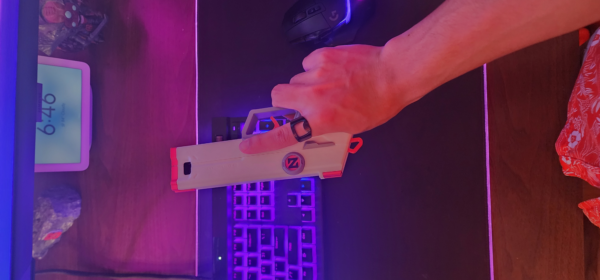

Spectrum Classic from "VALORANT"
December 2024

This print can be done all in one day.
Nothing much to this print, it's just cool. You can rack the slide (works via a rubber band) and pull the trigger to pew pew.
Extra pictures from the design process
